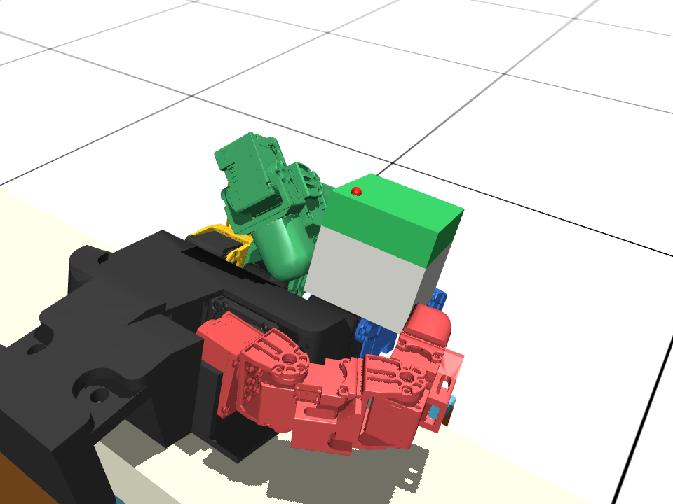

시뮬레이션 저장 상태다. 오른손의 관절 목표는 고정하고 윗단에 가정한 회전 힘을 주었다. 실제 왼손의 모양과 접촉은 없다. 오른손이 큐브 전체를90도 돌리는 성공 영상과는 별개다.
초록색 윗단 위 빨간 점은 방향을 구분하는 표시다. 실제 충돌이나 질량을 추가하지 않는다.

이 한 조건에서는 윗단약90도, 아래 몸통의 최대 회전약0.42도, 최대 이동약0.81mm였다. 마찰 설정과 회전 힘은 실제 큐브에서 측정한 값이 아니다.